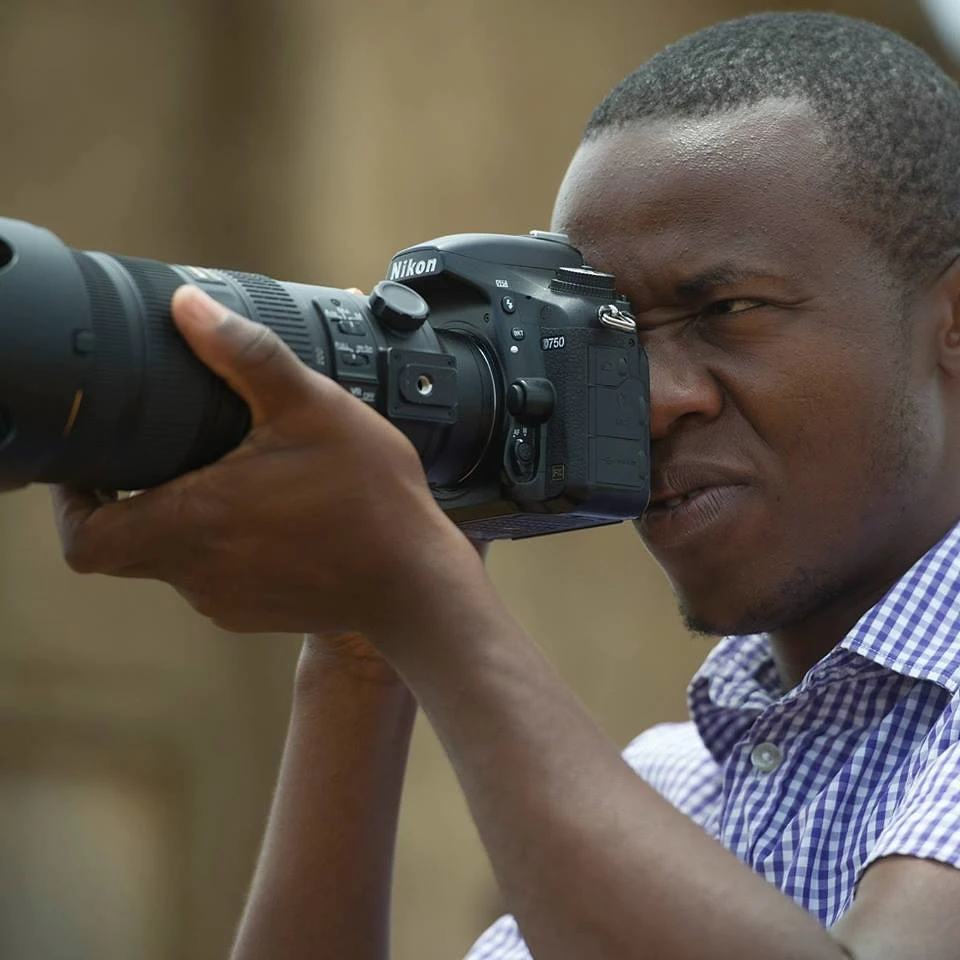
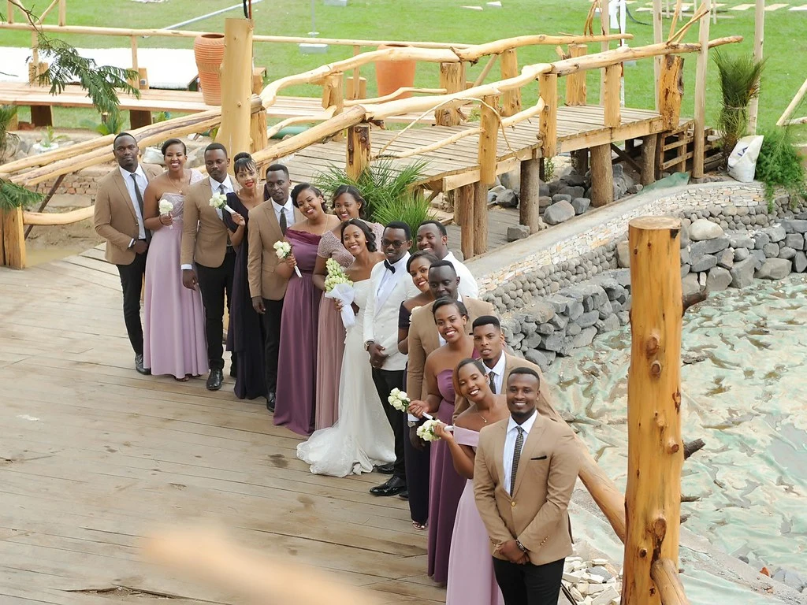

PHOTOGRAPHY / FILM / LIVE PRODUCTION
Every story
has a pulse.
For organisations, brands and events.
Made with people. From Kigali.

JABO / BEHIND THE CAMERAFounder & video journalist
 FROM THE STUDIO ARCHIVE / HUMAN CONNECTION
FROM THE STUDIO ARCHIVE / HUMAN CONNECTIONATTENTION IS WHERE IT BEGINS
Good work starts
with listening.
Founded by video journalist Nkurunziza Jabo, Creative Sound Studio brings photography, filmmaking and live production together in Kigali.
It begins with your people, your purpose and the moment you want to share.
Meet us through your next ideaDIFFERENT MOMENTS. THE SAME ATTENTION.
Made to connect.
Project captions to be confirmed.


Listen closely.
Find the feeling.
Make it resonate.
Our name is the starting point for this identity: a rhythm that opens into an image. One visual idea, carried from the mark to the way our work is presented.